This page details out my personal development projects. All software on display here is my fully owned property - please navigate to the professional work
section to see some of the work I am able to display from my professional career.
Projects: Treekeepers VR, a networked VR experience with crossplay on the Meta Quest and SteamVR
The Answering Machine, an analytics system using natural language processing to let users "speak" to their data
Land War, an 8-player real-time-strategy video game
First Ten, a voice interface application for Google Home
Human Joystick VR, an experimental virtual reality movement system
Raspberry Pi Control Panel, a physical home automation control panel
Treekeepers VR is a networked VR game where up to 4 players can cooperate to navigate an oversized world and save a giant tree.
Treekeepers is in production on both Quest (standalone VR) and Steam (PC VR) with full cross-play functionality. See the website above for links to all storefronts and more detail about the game.
Development
I began working on Treekeepers in June 2021, and my primary goal was to go significantly deeper into Unity and make a fully networked game. Very few co-op games existed in VR at the time (the area is still lacking) and my intention was to answer this need and create a game that 4 players could cooperate in within a static frame of reference (players move within a ship, and the ship moves through the world) while having to solve coordination challenges together.
I began designing the project for SteamVR only using the SteamVR SDK, but quickly realized that a VR game released only on PC would miss the majority of the userbase, as the (then Oculus) Quest 2 was quickly dominating the Market. Treekeepers was a good fit for a mobile platform with its simple low-poly cel-shaded design, so I pivoted to using OpenXR about 2 months into the project which could drive VR interactions on both PC and mobile (android) devices like the Quest 2.
By summer 2022, I had a releasable product, albeit only with one “world” available. I made the decision to push the game to early access where I could receive rapid feedback from real players, and after putting the game up and getting approved for both storefronts, Treekeepers released to early access on September 30th 2022.
Python, React, AWS Lambda and other serverless tools
This proof-of-concept system uses natural language processing (NLP) to produce answers to questions asked about data in plain english.
It is designed with simplicity in mind - upload any columnar dataset and start asking questions and getting answers. It uses some advanced NLP algorithms
to make assumptions about what data you're asking about, and will let you correct those assumptions for follow-up questions if they're wrong.
It is built entirely out of serverless components, which means there is no cost to maintain or run it other than the traffic the system receives.
How-to
On a desktop or tablet, click the link in the header to navigate to the answering machine. For now it isn't optimized for smartphone-sized screens.
In order to use the answering machine, you can either select one of the existing data sets such as "HR Activity Sample" or upload one of your own using the homepage of the site:
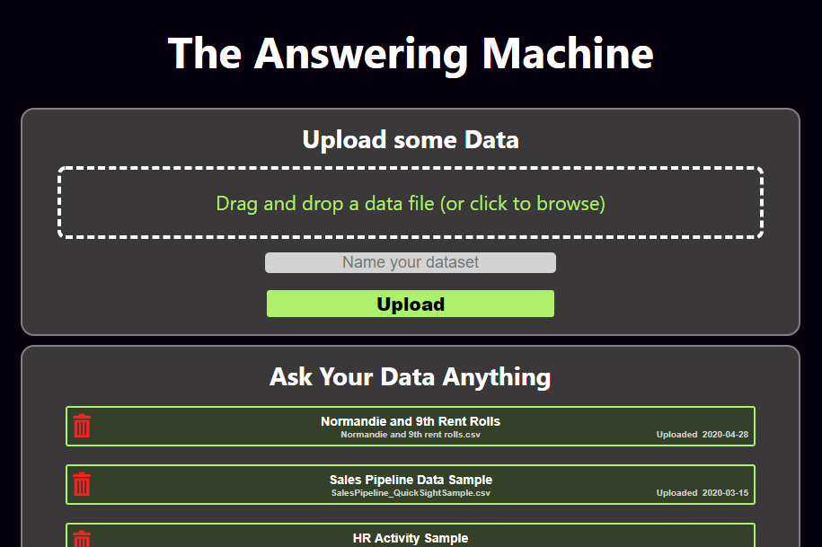
To upload your own, click in the upload area or just drag a file straight from your desktop. For now, use csv data files.
Excel and other spreadsheet programs can easily save data in the csv format using the "File > Save As" or similar option in the menu. Each file needs a unique name.
When you hit the upload button, the site may not appear to change until the file is uploaded, at which point you'll see it appear in the box labeled "Ask Your Data Anything" below.
Click on your file to start using it with the answering machine, or click the red trash can icon to delete it.
There are no user accounts in this system yet, so the data you upload might be seen by other users using the system. Try not to use sensitive data for now.
When you enter a dataset, you'll see a view that presents you with a quite a bit of information:
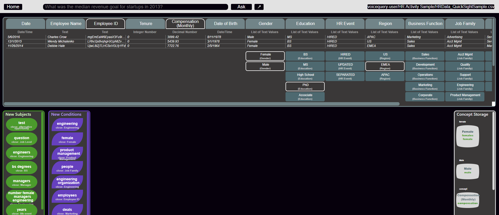
The only part you need to focus on right now is the information panel.
This panel lists out all of the fields (columns), data types of those fields, and some sample data from a few records in your data set:
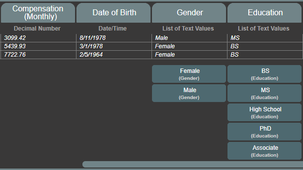
You can use this panel to start to formulate questions you might have about the data. If you see number values, you might ask about averages, maximums, or other math
that might otherwise take some time to calculate. If you see a date, you can ask questions about the data in certain time periods.
Many datasets also contain fields that only have a few specific allowed values.
When the answering machine sees less than 15 unique values in any field, the data type will be a "List" and it lists them right out under the sample values table.
You can use this type of value to ask questions about records containing those specific values. For example in the HR data set, you might only be interested in data where the "Education" field's value is "High School".
Now look to the query bar to start asking your data questions:
The types of questions that will currently be automatically detected and answered are:
Counts of records where certain conditions are true
Math questions such as averages, medians, maximums, and minimums
These types of questions can be made specific by using qualifying statements with prepositional phrases like "in 2019" or adjective phrases like "male" or "entry-level"
Combining these two ideas, you can ask specific questions with any number of qualifiers, such as: "What was the median salary of male employees in the engineering department 5 years ago?"
Upon hitting the "ask" button (or hitting Enter), the answering machine will do its best to answer your question, and will show you all of its work in this format:
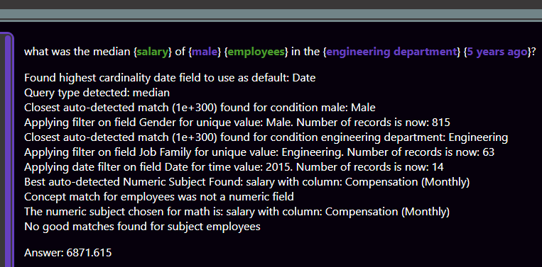
Let's look at this response from bottom to top.
The last line in the response is the answering machine's answer.
In this case, it is telling you the metric you asked for with all your stipulations is 6871.6 [dollars].
Moving up, you see a series of assessments that the answering machine has made in order to filter and identify the data you are asking about.
Statements like "Best auto-detected Numeric Subject Found: salary with column: Compensation (Monthly)" provide a glimpse into one of the answering machine's most advanced features, which use a
selection of NLP techniques to compare words and phrases that are similar in meaning, ultimately matching things you are asking about to fields and values that actually exist in your database.
In this case, it thinks you probably want to do a calculation on the "Compensation (Monthly)" field in your dataset when you specify you're asking about salaries.
At the very top of the response is how the answering machine's nested grammar parsing logic actually parsed your question, with some specific pieces color coded:
Green - green chunks indicate "subjects" that were detected. Subjects are what the answering machine thinks you're asking "about."
These should represent both the main subject and other supporting subjects in your question.
Purple - purple chunks are conditions. These are the things that the answering machine thinks you are trying to use to "specify" or filter data.
Now that your question is answered, you might notice that some new green and purple colored bubbles have appeared in the sections of your screen labeled "New Subjects" and "New Conditions".
We'll call these "lexicon":
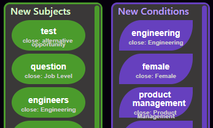
If the answering machine already understood what you were asking and successfully matched it to fields and values in your data, you don't have to do anything with these.
But often you will be using domain-specific lexicon, or the auto-matching algorithm simply won't pick the correct value. These situations are what concepts are for.
To create a concept, click and drag on the green or purple "lexicon" bubble and move it out into the blank middle area of the screen. Then click and drag the field or field value from the info-panel
at the top of the screen and drop it right on top of that bubble. You'll see both the data bubble and the lexicon bubble included in a larger grey bubble which represents the concept:
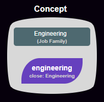
You can add more lexicon bubbles to this concept if they mean the same thing, but you can only use one data bubble.
Concepts override the answering machine's auto-matching logic. If you ask another question containing a subject or condition that is now matched by a user to a data value,
that data value will be used instead of the auto-match.
If the concept isn't working well, you can delete it by dragging all of the nested bubbles out of it either into the blank middle area or into the colored panel they originally came from.
Feel free to play around with new datasets and questions, and use the contact section of this site if you have comments or questions. When you ask questions or create / modify concepts, that data will automatically be
saved to the server in real-time. You can close the page anytime and come back to your dataset to keep asking questions.
Remember that there are no user accounts, meaning you can share your dataset and work in tandem with others!
But again, please do not upload sensitive data to this proof-of-concept tool as it will be available for other users to see and query.
Architecture
The Answering Machine is a purely "serverless" application, meaning that there is no server hosting the various components of the application until those components are
needed by a user. This is true for the database, the file storage, the static website, the backend compute, and the API orchestration.
For the cloud nerds out there, here is a great article
by Martin Fowler on what exactly "serverless" means, especially in terms of the backend compute portion which is arguably the most
valuable part of the application to be serverless. For reference, I am using Martin's 2nd definition of "serverless" here.
This is a high level map of all of the components that make the answering machine work in its current (June 2020) state.
The API gateways, cloudwatch events, and some triggers "given for free" by AWS are left out of this for readability:
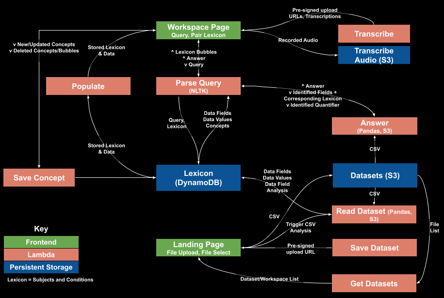
The full suite of lambdas and persistent storage services that make up the answering machine
Land War is an 8-player strategy game I developed as a solo project and released to Steam in March of 2019.
This game was intended to have low art requirements and simple interaction rules that result in deep strategic gameplay.
The core concept is that of an ultra-simplified real-time-strategy game. Each player is represented by a color and can grow their territory
by moving in any direction. The strategic elements occur when players encounter other players, and have to make choices about which side of their land to defend or give up.
Players can use the structure of the map and the coordinated action of other players to gain defensible footholds in order to take more area and eventually be the last player on the board.
A full game of the final product released on Steam played on a Windows computer.
Development
I built Land War over the course of 7 months and 400 hours of work using Unity with C#. Though art requirements were intentionally low for a video game, I still had to produce several hundred static graphics and gifs, and commissioned custom music for the menu and gameplay.
This project is one of my favorite examples of what can be done in relatively little time with a focussed vision and a constant eye on scope creep.
From the very start, I knew that a key to making compelling software was to flesh out the core concept before all else.
This is why I started on the most fundamental strategic interaction of the players and built an MVP version of the game without a menu, sound, art, or even a win condition.
I started the project on a Memorial Day Monday, and by Friday had a rudimentary prototype playable with 8 players on Nintendo Joy-con controllers paired to a windows machine via bluetooth.
This is what the project looked like for my first play-test with other people 5 days in:
4-player game played with Nintendo Joy-Cons on a build of the game from 5 days into development.
From there, I continued to work on depth and full feature functionality including menus, a tutorial, a map generator, a dynamic scoring and round system, better sound and sprite graphics,
different play modes and settings, and support for many controllers. I released the game with very little marketing
aside from some Reddit posts and a physical handout at E3, but was happy to receive positive reviews and several hundred purchases of the game.
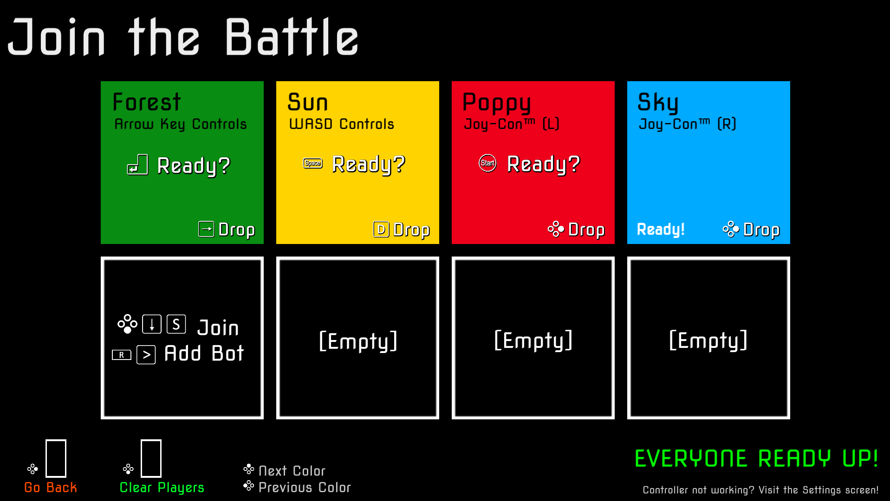
Player Select screen. Supporting menu and player controls across hundreds of controller types was one of the largest unforeseen challenges in developing Land War.
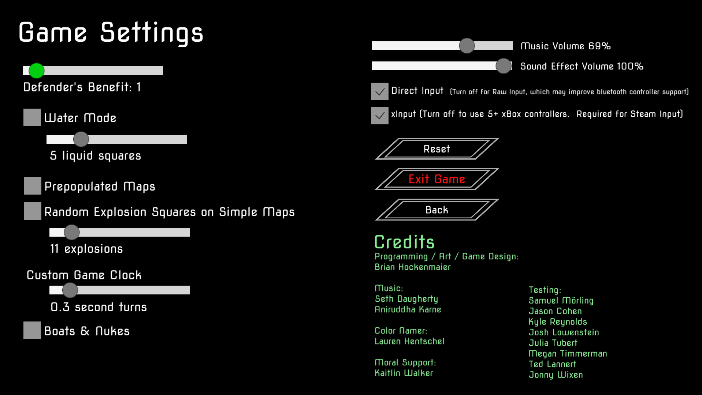
Settings menu. Most interesting mechanics I found while developing the game were added as options to keep the game interesting here.
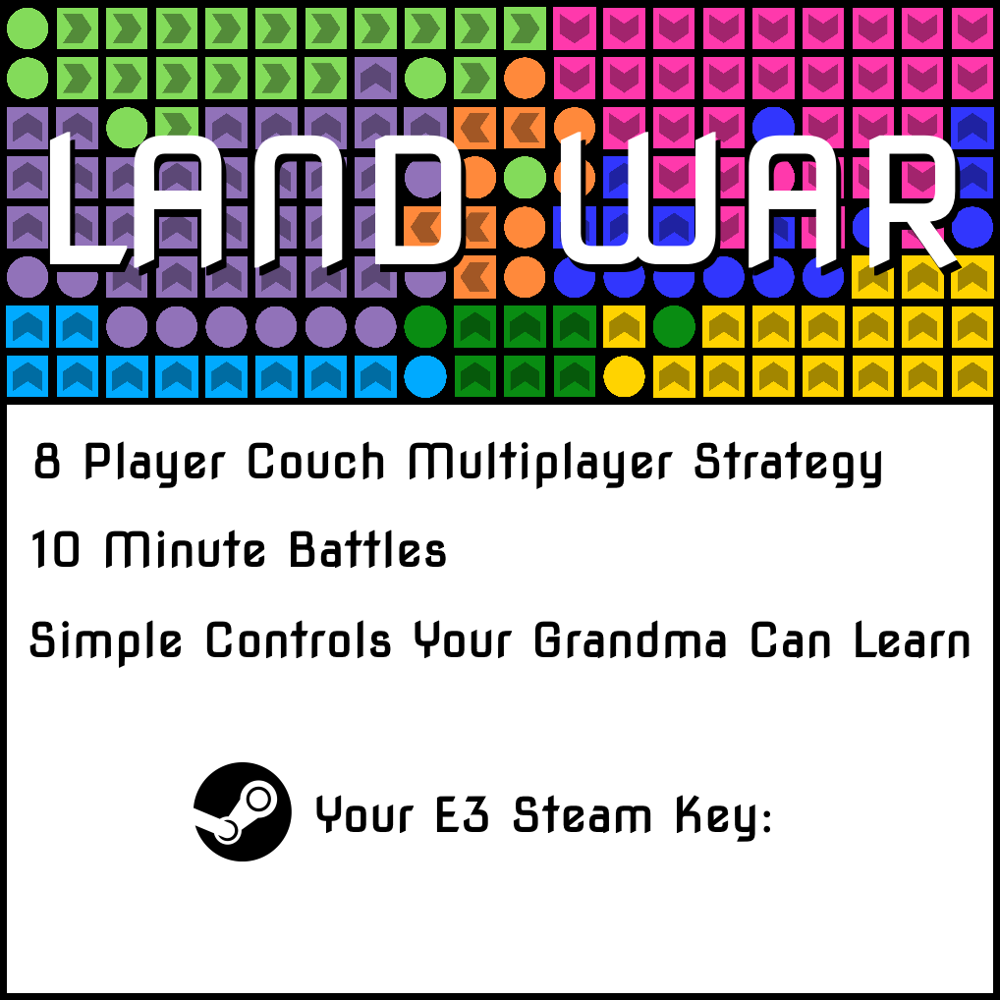
The only physical marketing material developed for Land War, several hundred steam keys (copies of the game) were handed out during the E3 convention in 2019.
First Ten is an educational app containing information about the U.S. Bill of Rights, accessible on google devices and smart speakers.
It uses a VUI (voice user interface) only, meaning there is no visual way to interact with the app.
Like Alexa skills, Google actions can be accessed through search or by simply asking for their names in google home smart speakers.
Ask your google home or android device "Can I speak to First Ten?" in order to try it.
Architecture
First Ten's backend is built in the serverless AWS services Lambda and DynamoDB, and its frontend - the engine that parses your voice into different "intents" and parameters -
is built on Google's Dialogflow.
The "Human Joystick" is an experimental VR movement system in which the player moves through the virtual environment by changing their physical location within their VR "playspace".
A demo of the human joystick movement system, showing how the system can work on flat surfaces or terrain.
This was my first barebones VR project. Though I knew Unity going in, VR and 3D games in general have a lot of unique aspects that I wanted to learn about while trying to solve an actual problem,
rather than following tutorials or demos online.
VR has some adoption problems in its current state. We all know of some of the main problems-
the clunky headset, the nausea issues, and of course the pricetag. But one major problem that you don't really notice until you get into it, is the lack of a good solution for virtual movement.
I had been wondering about "the human joystick" as a potential a solution to this particular problem ever since getting into consumer VR in 2016.
In most modern VR systems, the player can move physically around the room if they choose. Some applications and games depend on this - they put you in a small space and rely
on your physical movement in order to reach different areas and interact with things. But games that provide a more traditional sense of scale and allow players to move through large
worlds cannot rely on physical motion, because their users are constrained by physical space. Because of this, you see all kinds of "artificial" locomotion systems in order to let people
move around - some just like traditional 2D games that let users "slide" their playspaces around the world using a joystick, and others that adopt teleportation mechanics. Neither
feel very natural as compared to actually walking, and some can be downright sickening.
My goal with this project was to solve this problem with a mixture of physical and artificial movement.
It works like this: When the player is standing near the center of their playspace, physical VR movement applies.
The player can move around and interact with things with their actual bodies. But once the player moves further from the center,
the plaspace starts to move with them in the same direction as the vector
from the center of the player's space to their current position.
This allows for some of the benefits that physical movement experiences have, while allowing the players to more naturally move through an infinite amount of space.
I experimented with several speeds, both static and scaling with the distance between the center and the player. I also experimented with the size of the
physical movement "deadzone" and with vertical and constrained movement across hills, valleys, and buildings.
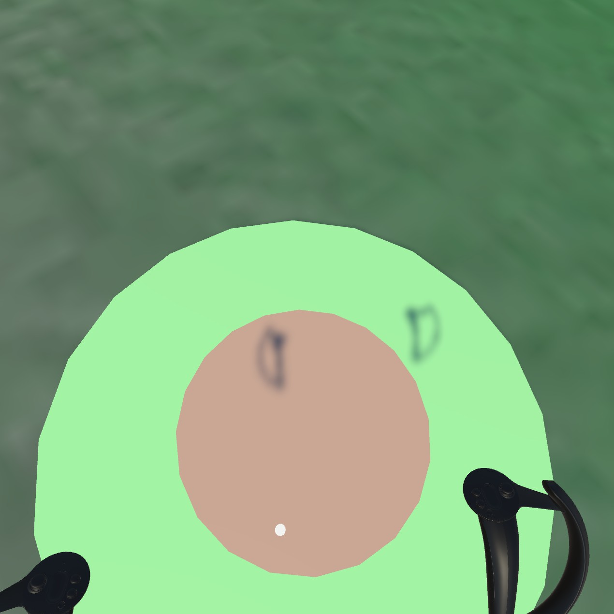
View from the player's perspective looking at the guides at his feet. With the white dot in the red "deadzone" the player isn't moving.
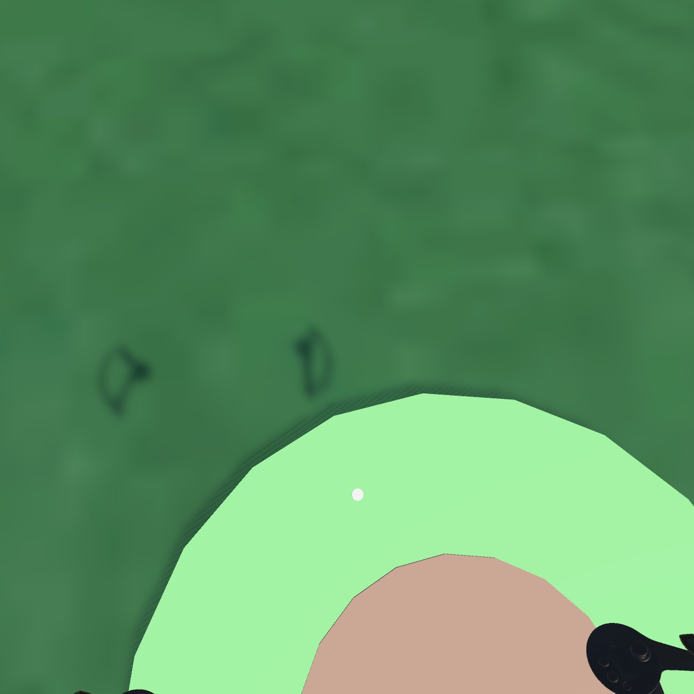
When the white dot is in the green area, the player moves in that direction. Here I am moving forward and left at about half of max speed.
Eventually I found some good default values and the system worked, but there were some unforeseen problems: First, it was more difficult to
center yourself within the playspace without looking at the visible guides I put at the player's feet than I expected.
Second and more importantly, when you were already moving in one direction, it was not as simple as I thought to start moving in another direction accurately
without fully returning to center, which was an immersion breaker.
[video link]
Ultimately I put the project up for others to view but have not expanded it into a full experience or released it on any marketplaces. Feel free to download the Unity project and try it on your own VR setup if you're curious.
I created this panel display and control much of the home automation I used in my Studio City apartment.
Mainly a hardware project, I designed and 3D-printed a case and frame for the touchscreen and raspberry pi microcomputer in order to mount them to the wall.
The software running the control panel is SaaS, but I did write a custom html wrapper to control the orientation and settings of the site, which is available on the github linked above.